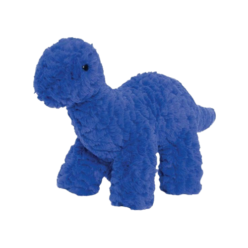
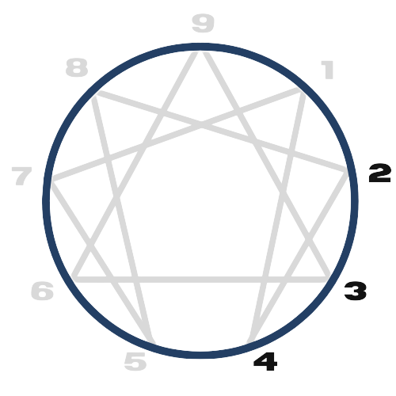

TIPO 02
(O prestativo)
O amor e a preocupação que sentem – e o bem genuíno que fazem – aquecem seus corações e os fazem sentir-se valiosos.
Pessoas de tipo 02 saudáveis são a personificação do “bom pai” que todos desejam ter: alguém que os vê como são, os entende com imensa compaixão, ajuda e incentiva com infinita paciência e está sempre disposto a ajudar – sabendo exatamente como e quando deixar ir.
CARACTERÍSTICAS
Positivas
Generosidade, calor humano, empatia, atenção aos outros, disposição para ajudar, intuição emocional, habilidade de leitura emocional, carisma, capacidade de criar conexões, compaixão, disposição para sacrificar-se pelos outros, amabilidade, diplomacia, expressão afetuosa, orientação para o relacionamento, apreciação do belo, otimismo, habilidade de motivar os outros, adaptabilidade, generosidade emocional.
Negativas
Necessidade excessiva de aprovação, tendência a manipular para obter aceitação, dificuldade em dizer não, autoanulação em favor dos outros, medo da rejeição, autoimagem dependente da resposta dos outros, propensão a se sobrecarregar, dificuldade em expressar necessidades pessoais, propensão ao ressentimento não expresso, autoengano sobre as próprias necessidades.
INFÂNCIA
Desde a infância, havia uma inclinação para demonstrar que não representava um fardo para os outros, levando a criança desse tipo a buscar, desde cedo, oportunidades para auxiliar os outros, seja os pais, irmãos, amigos, entre outros. Essa disposição para ajudar se assemelhava a uma forma de retribuição pela atenção recebida ou, possivelmente, como uma estratégia para obter mais atenção.
Essas crianças demonstram afeição e cuidado, buscando ativamente formas de ajudar e confortar aqueles ao seu redor. A busca por aprovação é uma característica notável, com essas crianças esforçando-se para serem percebidas como úteis e amáveis, validando seu valor por meio do cuidado pelos outros. Sua sensibilidade às necessidades emocionais alheias é evidente, mostrando-se atentas às emoções dos outros e prontas para satisfazer essas necessidades. Além disso, podem ser particularmente sensíveis às dinâmicas familiares, intervindo para criar harmonia e evitar conflitos.
Apesar de sua natureza amável e generosa, podem esconder um medo subjacente de rejeição, impulsionando-as a se esforçar constantemente para serem valorizadas. Essas crianças também podem buscar proximidade com figuras de autoridade, buscando orientação e validação em suas interações.
NO TRABALHO
Orientados para o serviço, os Tipo 2 demonstram disposição para assumir tarefas adicionais, visando apoiar a equipe. Sua empatia e habilidades interpessoais notáveis facilitam a comunicação efetiva e fortalecem as relações profissionais. Contudo, sua busca por aprovação e tendência a evitar conflitos podem resultar em sobrecarga de responsabilidades e comunicação indireta.
Embora a disposição para ajudar e apoiar os outros seja uma qualidade valiosa no ambiente de trabalho, pode haver desafios e estresse associados com o tipo 2. Eles podem colocar as necessidades dos outros acima das suas próprias, levando a um esgotamento físico e emocional.
TRÍADE: EMOCIONAL
"Pessoas nesta tríade percebem o mundo em termos de conexões a serem estabelecidas. A vida é uma rede social para ingressar e participar. Elas processam a realidade relacional principalmente por meio e com seus sentimentos. Os Tipo 2 desejam se convencer de que são pessoas boas e amorosas, concentrando-se em seus sentimentos positivos pelos outros, ao mesmo tempo que reprimem emoções negativas (como raiva e ressentimento por não serem apreciados o suficiente). Tentam controlar a vergonha ao fazer com que as pessoas gostem delas e as vejam como boas pessoas."
SUBTIPOS: 2W1, 2W3
As asas nos permitem individualizar os 9 tipos que são os mais gerais do Eneagrama. Você percebe que com os 9 tipos mais as 2 asas, estamos falando de 18 tipos do Eneagrama. Cada asa é um subtipo do tipo geral.